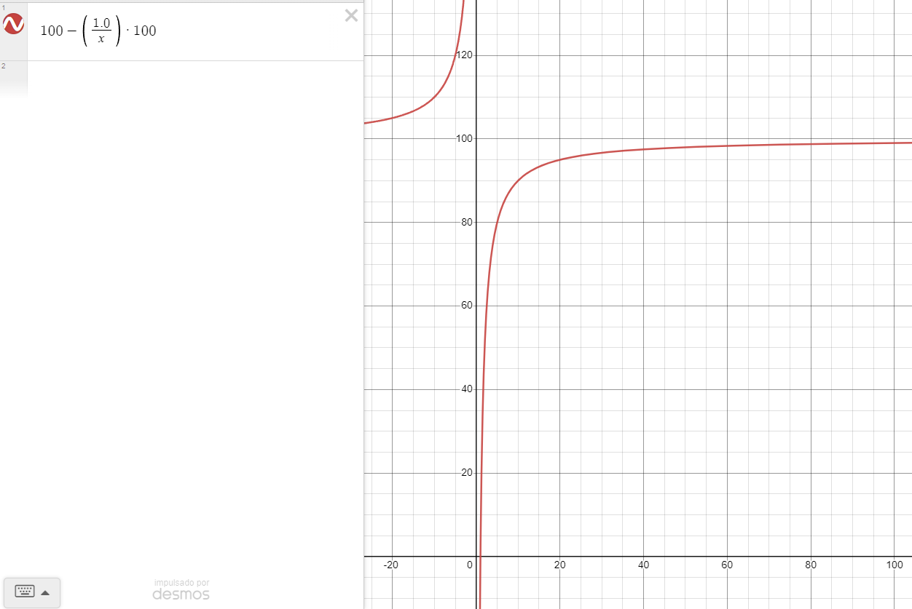
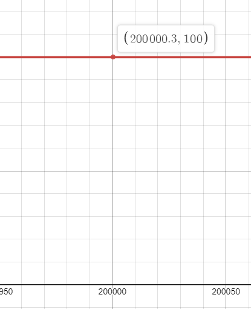

This scam told us to type <span>#SecretPage#hex=007,#agent</span> on the search bar, then log out, and head over to the I forgot my password page to unlock a secret menu and get free Robux.
Of course, this didn't work AT ALL. Typing this text won't do anything special, and it only shows the following when put in a HTML:
#SecretPage#hex=007,#agentThe whole video looks fake as well, This type of scam is bland. Let's move on.
This scam is also bland. You had to type the code in the picture after typing "javascript:" in the URL search bar while in Roblox, then press Enter.
All it did was show an alert box, then it redirects you to Xonnek's YouTube channel. The code doesn't do anyting else. This scam takes advantage of children who don't know about programming to subscribe for nothing.
There are videos that advertise Robux Generator websites, You put your username there, the amount of Robux, then click Generate. The website will often display a console-like box with information to distract the user and make it look like real.
After a while, the website will show that you need to verify, and to do so, you need to do some offers.
Doing these offers won't do anything. You won't get free Robux from this. It is not possible, it's only a waste of time.
The videos where people advertise their site often use edited videos to show the amount of Robux increase, and clean their comment section and only leave positive comments on to make it more beliveable.
This type of scam is one of my favorites.
This scam isn't only used for changing the username, it is also used for free Robux.
Victims are told to paste a big chunk of code while inspecting element a part of the Roblox website, and a menu will pop up where victims are asked to put their username/robux they want and press the submit button.
The percentage will begin increasing rapidly, but after 60% or so, it'll start slowing down. By 90% it's gonna be bloody slow, most users will quit trying because of the time. Even if you reach 100%, nothing will absolutely happen.
The highlighted text is the code for the percentage.
The maths for this technique is (100 - ((1.0 / sp) * 100), where sp increases 0.001 every 0.001 milliseconds.
This is what the graph looks like in Desmos, where the X axis is the time and the Y axis is the percentage displayed.
After a long while, at sp 200.000, we finally reach 100%. That's 2.3 days according to ChatGPT. But, sadly, you just have lost 2.3 days of your life on this scam, of course, you get nothing by this.